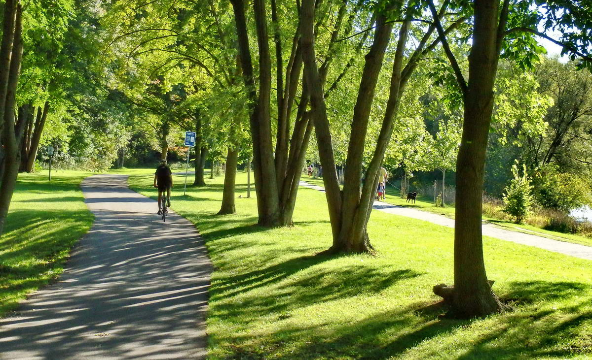
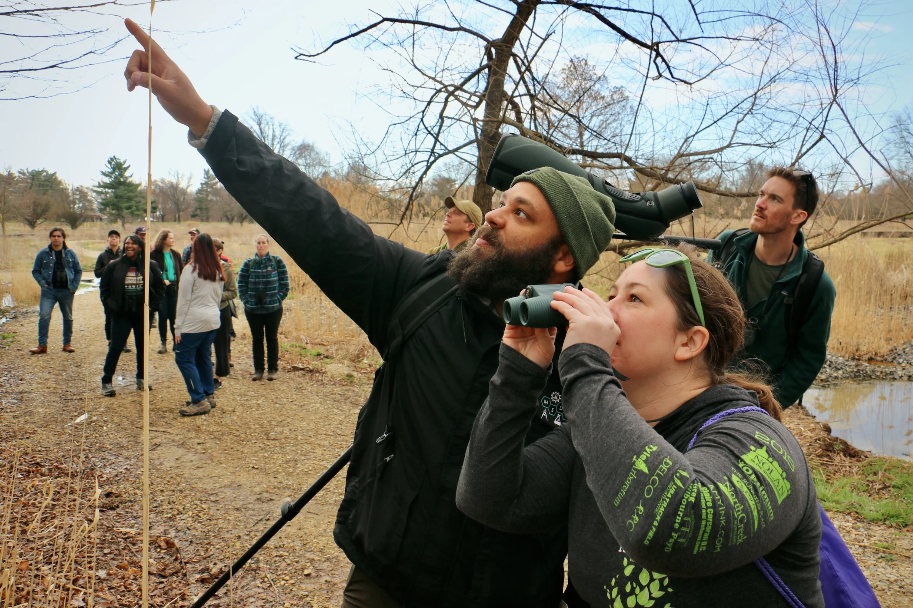
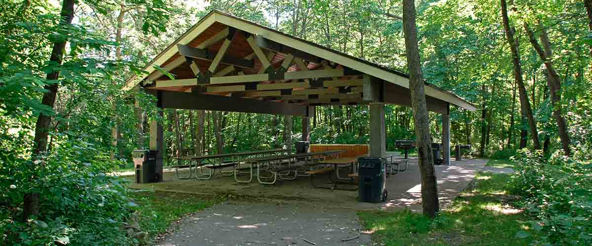
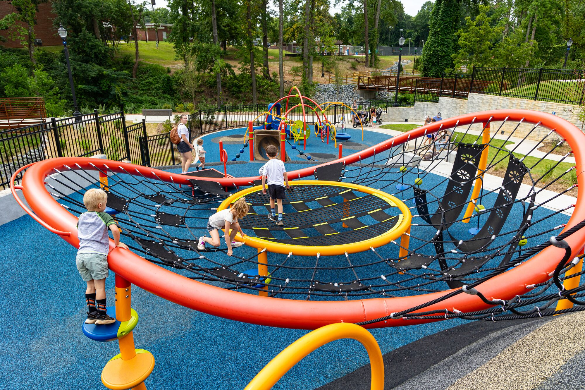

ABOUT THIS PARK-
Nestled in the heart of nature, Parks and Recreations offers a peaceful escape for visitors of
all ages. Whether you’re looking to enjoy a relaxing stroll, explore scenic trails, or spend time with family and friends, our park provides the perfect setting.
For nature lovers and adventurers, our extensive network of scenic trails provides an opportunity to immerse yourself in the beauty of the park. Whether you prefer
a leisurely walk along the riverbank, a challenging hike through the forest, or a peaceful bike ride through winding paths, there’s something for everyone.
As you explore, be sure to take in the breathtaking views and watch for the vibrant local wildlife that call the park home.
Nature Trails

Explore miles of scenic trails suitable for hiking, walking, and biking. Our park offers a variety of trails, from easy, flat paths that are perfect for
beginners and families, to more challenging routes that will test the stamina of even the most experienced hikers. Along the way, you will encounter
breathtaking views of lush forests, sparkling streams, and panoramic vistas that will leave you in awe.
Wildlife Watching

Catch a glimpse of the diverse wildlife that calls our park home, including deer, birds, and other animals. Perfect for photography enthusiasts,
nature lovers, and anyone looking to experience the natural world up close. As you explore the park, you'll have the chance to observe a wide variety of
animals in their natural habitats. From deer grazing peacefully in meadows, to birds of prey soaring high above, the park offers ample opportunities for
observation and discovery. Explore Birdwatching Resources
Picnic Areas

Our park offers several picnic areas perfect for family gatherings, relaxing afternoons, or outdoor meals
surrounded by nature. With shaded spots near tranquil lakes, open meadows with sweeping views, and secluded areas
surrounded by trees, there is a perfect location for every type of picnic experience. Whether you’re planning a small
get-together or a large family reunion, our picnic areas provide the perfect setting for creating memories.

Kids' Play Zone-
Our vibrant Kids' Play Zone is designed to provide endless fun and excitement for children of all ages.
Featuring modern, safe playground equipment, including swings, slides, climbing structures, and interactive play panels,
it’s the perfect spot for little adventurers to explore and burn off energy.
Shaded seating areas nearby ensure parents and guardians can relax while keeping an eye on their kids.
The area is surrounded by lush greenery, offering a beautiful and secure environment for play.
Whether it’s a quick stop after school or a weekend family outing, the Kids' Play Zone guarantees smiles, laughter, and cherished memories for the whole family.
Get Involved!
We believe in the power of community and invite you to join us in making our parks better for everyone. Whether it’s volunteering,
attending a community meeting, or sharing your ideas, your voice matters.
Thank You for Visiting!
Stay connected with us through our social media channels or contact us directly through our Contact Us page with any questions or suggestions.
“Connecting People with Nature – One Experience at a Time.”